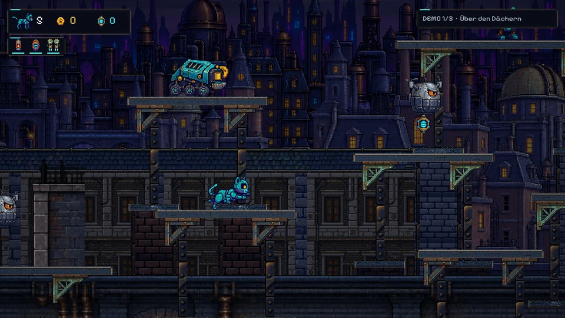
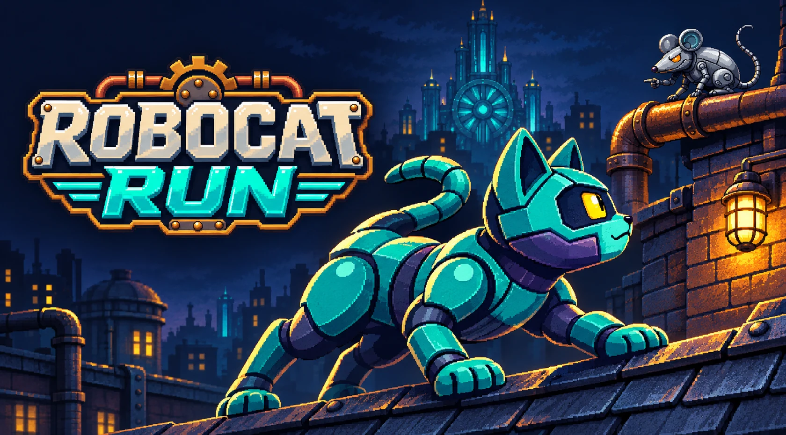
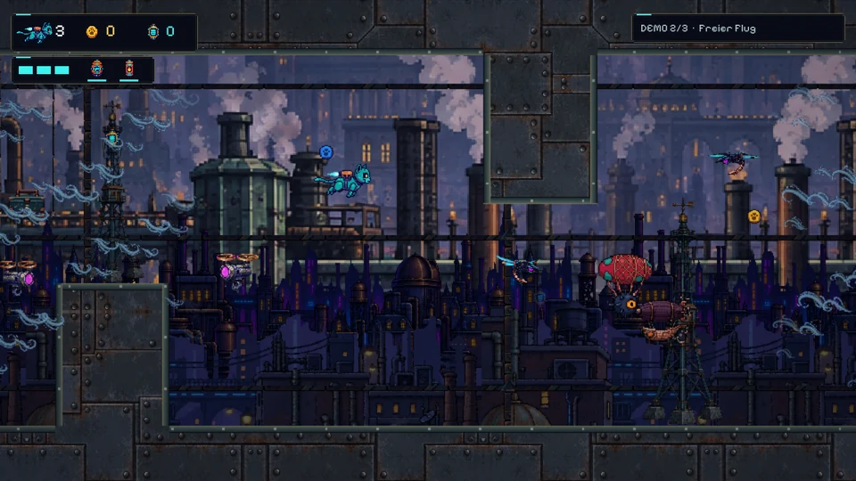
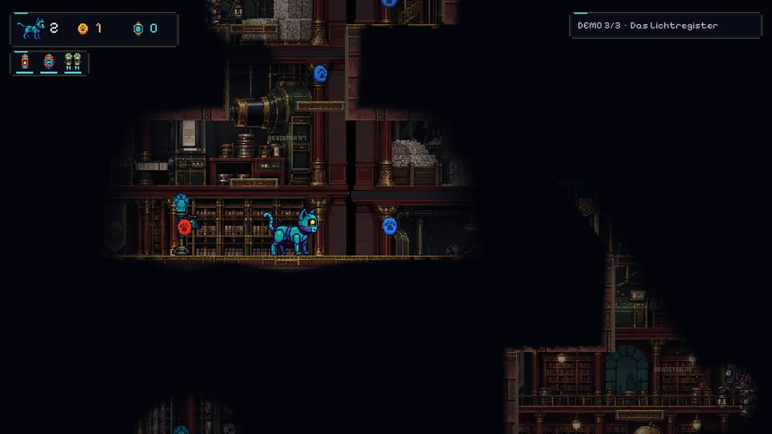

01 / DIE DÄCHER
Immer eine Pfote voraus.
Springen, ausweichen, lasern. Über den Dächern stehen dir Roboter und knifflige Sprünge im Weg.

NEO RETROVILLE WARTET AUF DICH.Über die Dächer. Mitten durch den Luftverkehr. Bis ins dunkle Kulturarchiv. Jage die Maus durch Neo Retroville – und hilf uns, ein noch besseres Pixel-Jump-and-Run daraus zu machen.
Laser, Doppelsprung und Hover sind von Anfang an dabei.

Springen, ausweichen, lasern. Über den Dächern stehen dir Roboter und knifflige Sprünge im Weg.

Fliege durch enge Passagen, halte Abstand zu Minen und finde deinen Weg durch den Luftverkehr.

Verwinkelte Korridore, wenig Licht und wachsame Gegner. Im Archiv wird aus der Jagd ein Versteckspiel.
Das ist Robocat Run in Bewegung: schnelle Dachpassagen, Flugmanöver und ein Ausflug ins ungemütliche Dunkel.
Die Katze ist bereit. Jetzt wollen wir wissen, wie sich das Spiel für dich anfühlt.
Die drei Kapitel werden nacheinander freigeschaltet. Keine Installation, kein Steam-Zugang – einfach herunterladen und losjagen.
Die ZIP-Datei vollständig in einen eigenen Ordner entpacken.
Robocat Run Demo.exe starten. Die Steuerung findest du im Spiel.
Was macht Spaß? Wo hakt es? Erzähle es uns nach deiner Runde.
Ein Sprung, der nicht klappt. Ein Gegner, der dich überrascht. Oder ein Moment, der einfach Spaß macht. Auch kurze Rückmeldungen helfen – selbst wenn du die Demo nicht beendest.
Kein Konto und keine E-Mail-Adresse nötig. Deine Antworten werden auf unserem Server gespeichert und sind nicht öffentlich.
Nein. Das ist eine kostenlose, deutschsprachige Testdemo mit drei Kapiteln. Robocat Run wird weiterentwickelt. Schwierigkeit, Steuerung und technische Probleme sind genau die Dinge, zu denen wir deine Meinung brauchen.
Diese Demo ist für Windows-PCs mit 64-Bit-System. Das Video und die Website kannst du auch auf dem Handy ansehen; zum Spielen öffnest du diese Seite auf deinem Windows-PC.
Abgeschlossene Kapitel, Bestleistungen und das Gegnerarchiv bleiben erhalten. Ein angefangenes Kapitel beginnt beim nächsten Besuch von vorn. Die Demo hat einen eigenen Spielstand und verändert den Spielstand der Vollversion nicht.
Lies die Startanleitung und bekannten Einschränkungen. Wenn etwas nicht funktioniert, hilft uns der genaue Wortlaut der Meldung im Fragebogen. Weitere Informationen findest du auf der Downloadseite.